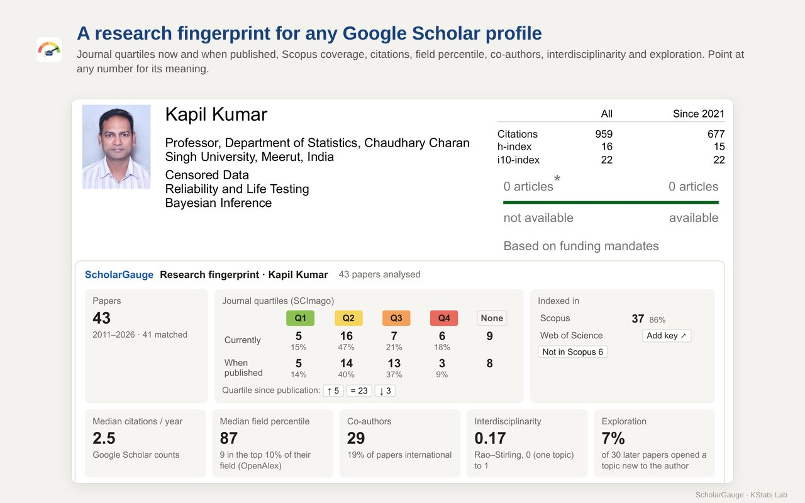
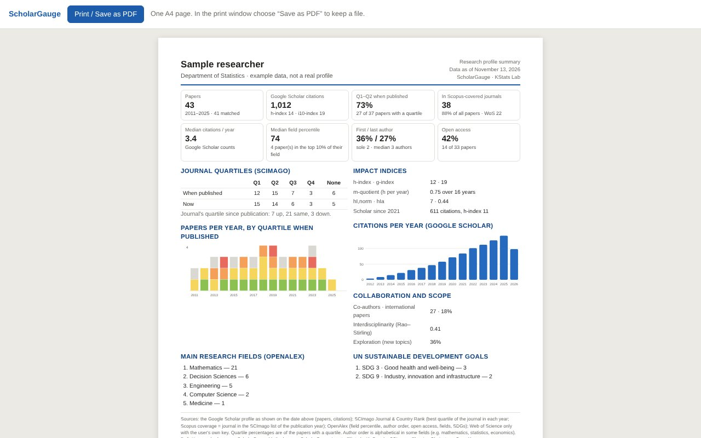
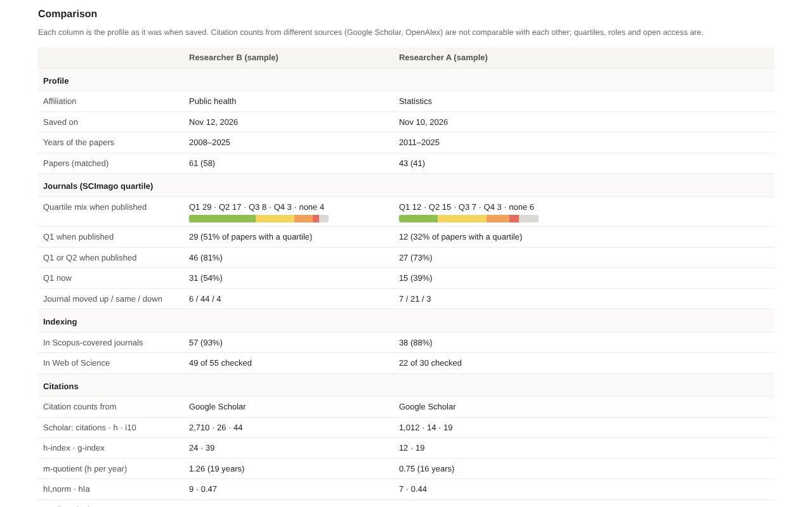
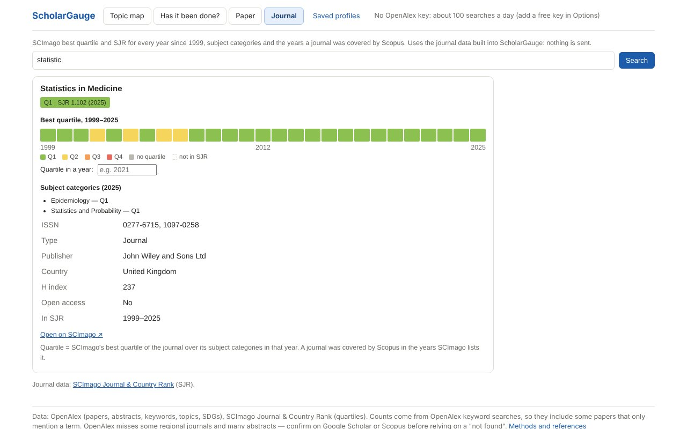
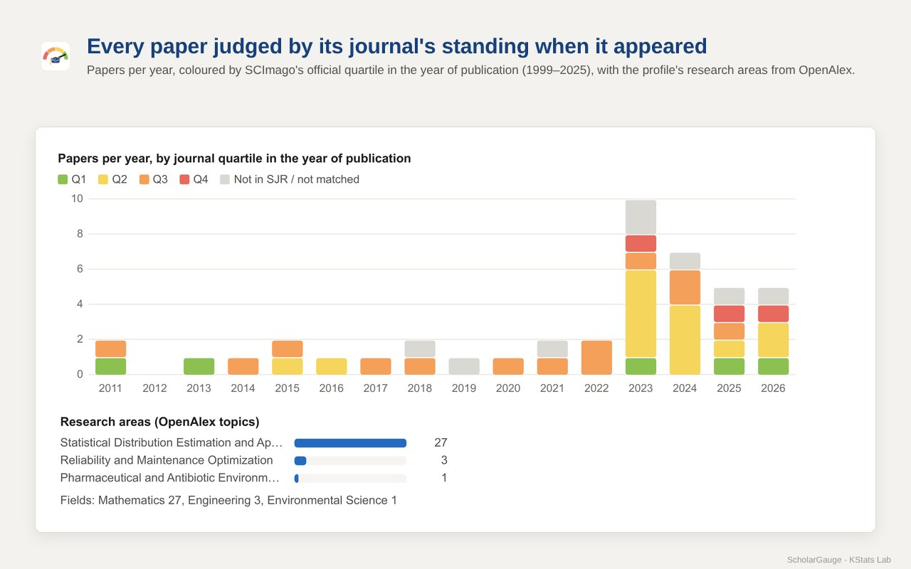
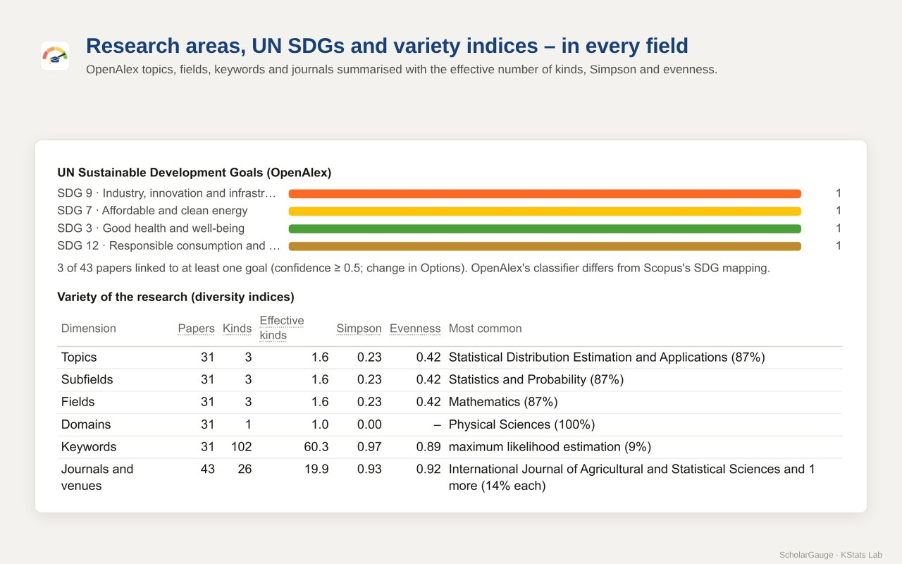
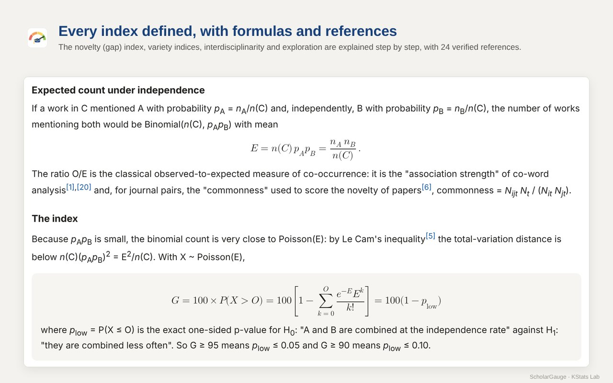
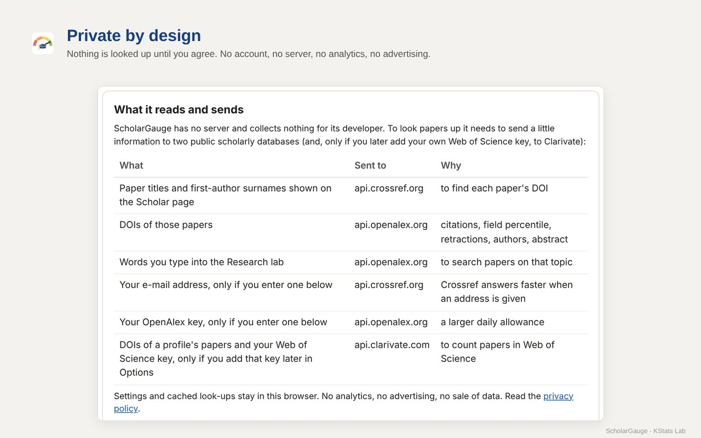

नया · New in version 1.1
Chrome updates ScholarGauge by itself. If yours still says version 1.0, the update reaches it within a few days.
- Impact indicesh, g and the m-quotient, plus hI,norm and hIa, which share each paper's citations among its authors and allow for career length.
- Author roleShare of papers as first, last or sole author, with the median number of authors per paper.
- Open access and citations per yearShare of papers free to read (diamond, gold, hybrid, green, bronze), and Scholar's own citations-per-year chart.
- Save a profileNext time, see what changed: new papers, citations, h-index, journals that moved up or down.
- Compare profilesTwo to four saved profiles side by side: quartiles, indexing, citations, authorship and openness.
- One-page reportA whole profile on one A4 page, to print or save as PDF.
- Journal checkerAny journal by name or ISSN: its SCImago quartile in every year since 1999, and the years Scopus covered it.
- Right-click checkSelect a paper title on any website, or right-click a DOI link, and choose Check with ScholarGauge.
क्या-क्या है · What it does
Under every Scholar result
- The journal's SCImago quartile and SJR today, and its quartile in the year the paper appeared (1999–2025)
- Warnings for retracted papers and for journals later dropped by Scopus
- Citations per year and the paper's citation percentile in its field
- Topic and UN Sustainable Development Goals
- Sort, filter by quartile, export to CSV
- On any other website: select a title, right-click, Check with ScholarGauge
On a Scholar profile
- Quartile matrix: papers in Q1–Q4 journals now and when published, and which journals moved up or down
- Indexed in: papers in Scopus-covered journals, and – with your own free Clarivate key – in the Web of Science Core Collection
- Papers per year coloured by quartile, venues, median citations per year and field percentile
- Impact: h, g, m-quotient, hI,norm and hIa; author role; open access; Scholar's citations per year
- Research areas, SDGs, co-authors and countries
- Interdisciplinarity (Rao–Stirling), exploration of new topics and variety (diversity) indices
- All years or the last six; point at any number to see what it means
- Save a profile to see what changed later, compare saved profiles side by side, or make a one-page report
Research lab
- Topic map: which ideas the most relevant papers on a topic study together, and which common pairs are missing
- Has it been done? Type two ideas (and a field): the papers that already combine them, with a novelty (gap) index from 0 (crowded) to 100 (open gap)
- Paper: any paper by DOI or title – its journal's quartile then and now, citations and field percentile
- Journal: any journal by name or ISSN – its quartile in every year since 1999 (built in, nothing is sent)
- Every index comes with its definition, formula, a worked example and references, so it can be cited
झलक · Screenshots
















कैसे शुरू करें · Getting started
- Add to Chrome from the Chrome Web Store. Pin ScholarGauge from the puzzle-piece menu so its button stays in the toolbar.
- The welcome page shows what is sent and to whom. Click Agree and turn on. An OpenAlex key is optional.
- Search on Google Scholar: quartile and citation chips appear under every result. On a profile, click Load all papers, then Analyse in the ScholarGauge panel. Below the cards: Save profile, Compare… and One-page report.
- For the Topic map, Has it been done?, Paper and Journal, click the ScholarGauge button in the toolbar.
- On any website, select a paper's title (or right-click a DOI link) and choose Check with ScholarGauge.
आँकड़े कहाँ से · Data and methods
Sources
- Journal quartiles and SJR: SCImago Journal & Country Rank, 1999–2025, built into the extension
- Papers, field percentiles, topics, keywords and SDGs: OpenAlex
- DOIs found from titles: Crossref
- Citation counts on Scholar pages are Google Scholar's own
Methods
The novelty (gap) index, variety indices, interdisciplinarity, exploration and the impact indices (h, g, m, hI,norm, hIa) are explained step by step, with 30 references: Methods and references.
Using them in a report or paper? How to cite ScholarGauge.
Privacy
Free, no account, no server, no analytics, no advertising. Nothing is looked up until you agree. Only paper titles, first-author surnames, DOIs, your Research-lab searches and text you choose to check with the right-click item are sent, and only to Crossref and OpenAlex (and, only if you add your own Web of Science key, the DOIs of a profile's papers to Clarivate). Settings and saved profiles stay in your browser.
सवाल-जवाब · Questions
Is it really free?
Yes. No account, no advertising and no paid version. All KStats Lab apps and extensions are free.
Why do some papers show no quartile?
Either the journal was not in SCImago's list in that year (so it was not covered by Scopus then), or the item is a book, chapter, conference paper, thesis or preprint, or its title could not be matched to a DOI. Such papers are counted under “None” and “not in SJR”.
Are these the same quartiles as Web of Science (JCR)?
No. ScholarGauge shows SCImago's best quartile of the journal across its subject categories, which is based on Scopus. Clarivate's Journal Citation Reports use other data and can give a different quartile.
Why is the h-index on the card different from the one Scholar shows?
The card computes h (and g, m, hI,norm, hIa) from the papers ScholarGauge has read on the page, so click Load all papers before Analyse. Scholar's own h-index and i10-index are shown unchanged next to the citations-per-year chart.
Where are saved profiles kept? Can others see them?
Only in your own browser. They are never sent anywhere, and Delete on the Saved profiles page removes them.
Do I need an API key?
No. An OpenAlex key only raises the daily allowance for heavy use. A free Clarivate key (Web of Science Starter API) is needed only to count papers in the Web of Science Core Collection.
Is it connected with Google, SCImago or Clarivate?
No. ScholarGauge is an independent academic tool by KStats Lab. It is not affiliated with or endorsed by Google, SCImago, Elsevier, Clarivate, Crossref or OpenAlex.
Something looks wrong. What should I send?
Write to kstatslab@gmail.com with the link of the Scholar page or profile and what you expected to see.
संपर्क · Contact
Questions, ideas or a mistake to report: kstatslab@gmail.com. A short review on the Chrome Web Store helps other researchers find it.
Google Scholar is a trademark of Google LLC. Journal data: SCImago Journal & Country Rank. Paper records: OpenAlex and Crossref.